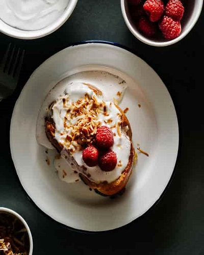

Breakast and Brunch
Coconut French Toast Recipe
Every time Sunday comes around I always ask myself, where the heck did the week go?! Is it me or does everyone feel that the older you get, the faster time seems to pass by? As a kid, the stretch between the first of December and Christmas was the longest time ever. It seemed like an eternity between each day, probably because those little chocolate advent calendars made it even harder to wait for each day to be over. I have such fond memories of me and my brother poking at our advent calendars. One year we managed to sneak one of the chocolates early. We each very carefully punched out the cardboard, ate the chocolates, and pushed the picture back into place. Of course when it was time for that day’s chocolate we were totally busted. It was worth it.
Anyway, chocolate advent calendars don’t have anything to do with this coconut tres leches French toast. Tres Leches cake, if you haven’t had it, is a absolutely delicious concoction of a light and fluffy yet dense sponge cake drenched in three kinds of milk. I French-toast-ified it here because I love the milky sweet flavors. Toasted coconut and whipped coconut milk add an extra bit of indulgence and tart raspberries brighten up the whole works.
The ingredient list looks a bit long, but really, these guys whip up in a flash. If you must make it easier and skip out on one thing, I’d say use regular whipped cream instead of coconut whipped cream. But really, coconut whipped cream is SO GOOD. This is totally dessert for breakfast, which seems to be my jam lately and is so weird because I’m usually obsessed with savories. Guess the holiday season just makes me feel extra sweet!

COCONUT TRES LECHES FRENCH TOAST RECIPE
Ingredients
- 1/2 cup unsweetened coconut flakes
- 2 tablespoons milk
- 2 tablespoons evaporated milk
- 2 tablespoons condensed milk
- 3 large eggs
- 1/2 teaspoon vanilla extract
- pinch of salt
- 1 can full fat coconut cream, refrigerated overnight
- 2 teaspoons sugar
- 4 slices extra thick French bread or bread of choice
- butter or oil
- 1 cup raspberries
Add the coconut flakes to a dry pan and toast over medium heat, stirring frequently, until flakes are golden brown and toasty. Remove from the pan and set aside.
Flip the coconut can upside down and open. Pour the separated coconut water into a bowl and reserve for other uses. Spoon out the thickened cream into a large chilled bowl. Beat with a hand mixer until fluffy and thick. Add the sugar and whip until dissolved. Set aside in the fridge.
In a shallow bowl, whisk together the milk, evaporated milk, condensed milk, eggs, vanilla and salt. Dip the slices of bread into the egg mix, flipping once. Melt a bit of butter or oil in a large non-stick skillet over medium to medium-high heat. Add the soaked slices of bread and fry until golden brown and crisp, flipping once.
Enjoy immediately, topped with coconut whipped cream, toasted coconut and raspberries.
